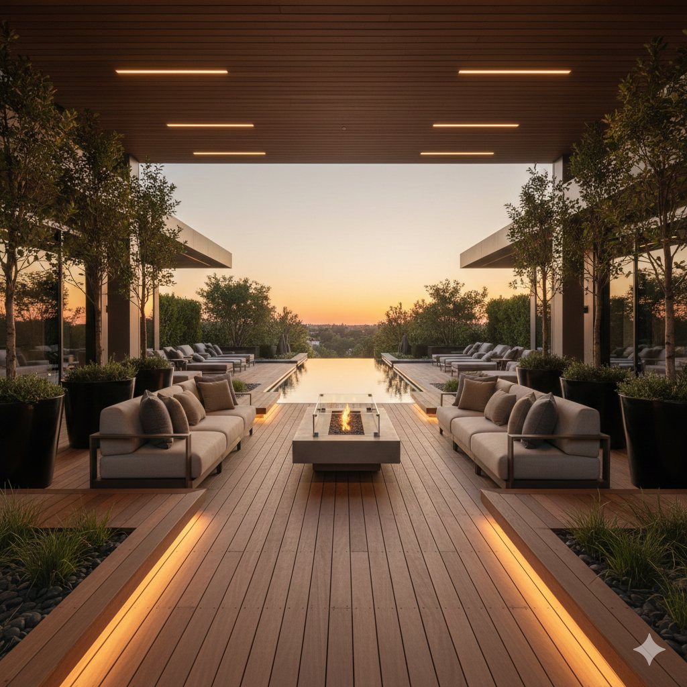

Excellence & Pérennité
Terrasses Premium
Nos terrasses conjuguent esthétique raffinée et résistance aux intempéries. Bois exotiques certifiés FSC (ipé, cumaru, teck), composites coextrudés haute densité garantis 25 ans, ou pierres naturelles (travertin, granit, grès cérame 20mm). Structure porteuse dimensionnée : lambourdes aluminium ou bois classe 4, plots réglables béton, drainage intégré. Finitions invisibles ou apparentes selon esthétique recherchée.
Bois exotiques FSC
Composite premium
Pierre naturelle
Grès cérame 20mm